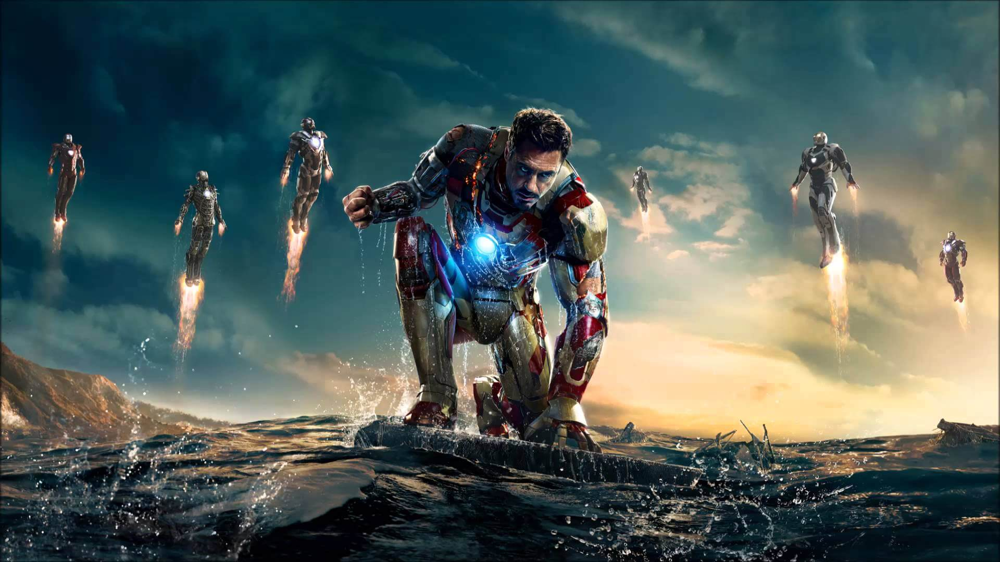

באטמן, הידוע גם בשם ברוס ווין, הוא דמות מוכרת מעולם גיבורי העל של די.סי.
הוא אדם עשיר שמחליט להילחם בפשע בגות'אם סיטי לאחר שראה את הוריו נרצחים לעיניו בילדותו.
בעזרת אינטליגנציה חריפה, מיומנויות קרב מעולות וטכנולוגיה מתקדמת, באטמן מתמודד עם מגוון של פושעים,
כולל אויבים מפורסמים כמו הג'וקר וקטוומן. דמותו מייצגת את המאבק הפנימי בין צדק אישי לבין חובות חברתיות,
ולעיתים קרובות מדברת על הקונפליקט בין אור לחושך.
איירון מן

איירון מן, או טוני סטארק, הוא גיבור על מעולם מארוול המשלב בין טכנולוגיה, כוח ועושר.
אחרי שנחטף על ידי טרוריסטים, טוני ממציא חליפה מתקדמת המאפשרת לו להילחם בפשע ולהגן על העולם.
הוא ידוע בהומור החכם שלו ובסגנון החיים המפואר, אך מתמודד גם עם קשיים אישיים ומוסריים.
איירון מן מייצג את השינוי האישי, הכוח של טכנולוגיה ואחריות על פעולותיו, גם כשזה קשה.
קפטן אמריקה
קפטן אמריקה, הידוע גם בשם סטיב רוג'רס, הוא גיבור על מעולם מארוול שנלחם למען צדק ואידיאלים.
אחרי שהוזרק בסרום שמעניק לו כוחות על, סטיב הופך לגיבור המוביל את הלוחמים נגד הנאצים במלחמת העולם השנייה.
קפטן אמריקה מייצג את ערכי הפטריוטיות, הכבוד והחברות, ומזכיר לנו שלפעמים הקרבה האישית היא מה שמוביל לניצחון הגדול.
הוא דמות שמאמינה באמונה עזה, במאבק למען צדק ובחשיבות של עמידה על עקרונות.